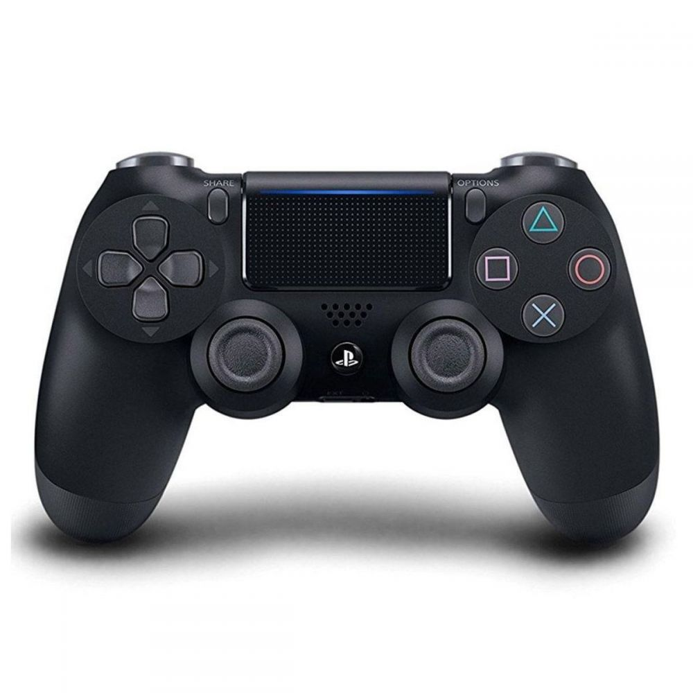
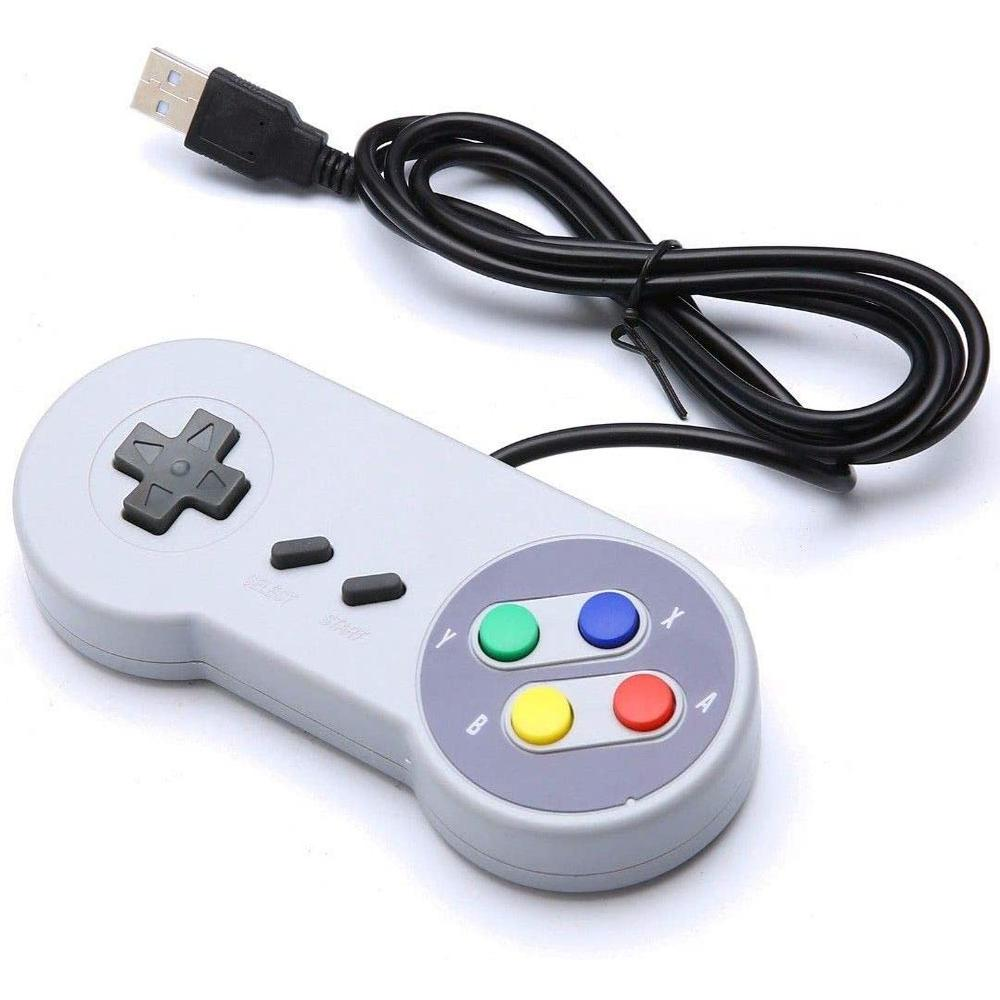

Controle sem fio Dualshock Playstation 4 Sony
R$ 329,90 Compre Aqui
- Plataforma: PlayStation 4
- Potencia de Entrada: DC 5 V = 800 mA
- Tipo de Bateria: Bateria de íon-lítio recarregável integrada
- Capacidade de Bateria: 1 Ah
Controle Sem Fio Xbox Series X - Carbon Black

R$ 449,90 Compre Aqui
- Cor: Preto
- Controle Sem Fio
- Funciona bem com todos os consoles (Xbox Series X, Xbox One e Xbox Series S)
- Tecnologia Xbox Wireless e Bluetooth para jogos online em consoles compatíveis, PC com Windows 10, telefones e tablets compatíveis*
Controle Super Nintendo
R$ 29,90 Compre Aqui
- Controle USB; - Plug & Play, sem necessidade de drivers; - Compatível com Windows; Itens Inclusos: - 1 controle tipo Snes USB Cabo: 1,50m aproximadamente